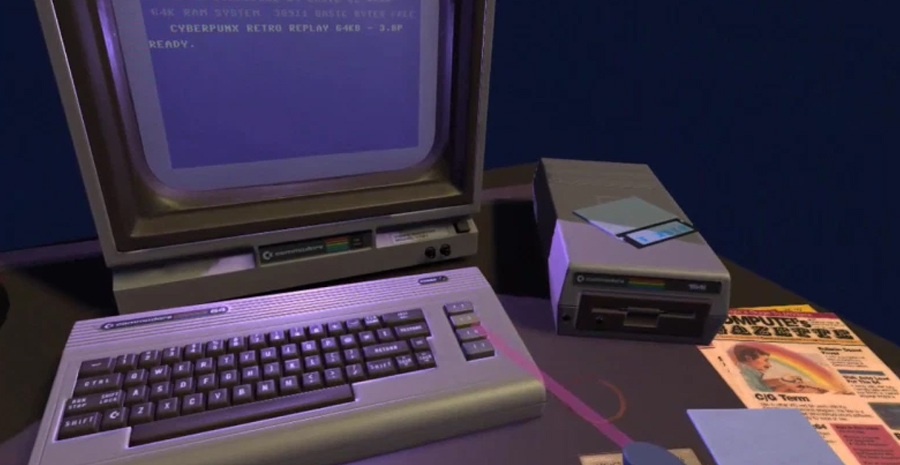

Pourquoi Rétro PC ?
Réparation
Réparation, restauration et modernisation de matériel vintage.
Sauvegarde
Récupération de données sur disquettes et disques durs IDE.
Nettoyage
Dépoussiérage complet et blanchiment des plastiques jaunis.
Rétro-PC Dépannage

Réparation, restauration et modernisation de matériel vintage.
Réparation, restauration et modernisation de matériel vintage.
Récupération de données sur disquettes et disques durs IDE.
Dépoussiérage complet et blanchiment des plastiques jaunis.